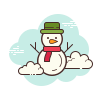
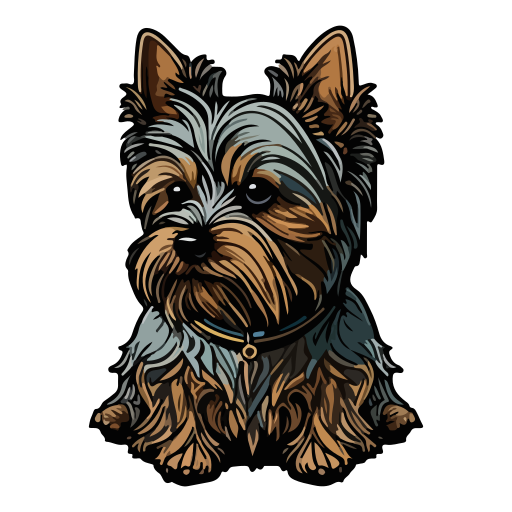

Sobre mim
Quem sou eu
Oi, eu sou a Gessica! Estudante de Ciência da Computação, apaixonada por design e desenvolvimento web. Estou no início da minha jornada na área de TI e venho descobrindo mais sobre mim mesma e meus sonhos.
Meus hobbies
No meu tempo livre, gosto de assistir séries, jogar jogos de palavras e aproveitar a brisa da praia. Também adoro cozinhar e passar momentos simples, mas significativos, com quem amo.
Minhas paixões
- Sou apaixonada por tudo que envolve o Natal e sonho em viver um Natal com neve.
- Amo minha cachorrinha Megui, que ganhou seu nome através de um sonho.
- Prefiro doces a salgados, mas coco... estou fora!
Curiosidades sobre mim

Já assisti ao mesmo filme de Natal mais de 10 vezes e ainda me emociono.

Minha cachorrinha Megui adora brincar com bolinhas, mas tem medo de balões.
Prefiro doces a salgados, mas coco... definitivamente não é comigo!